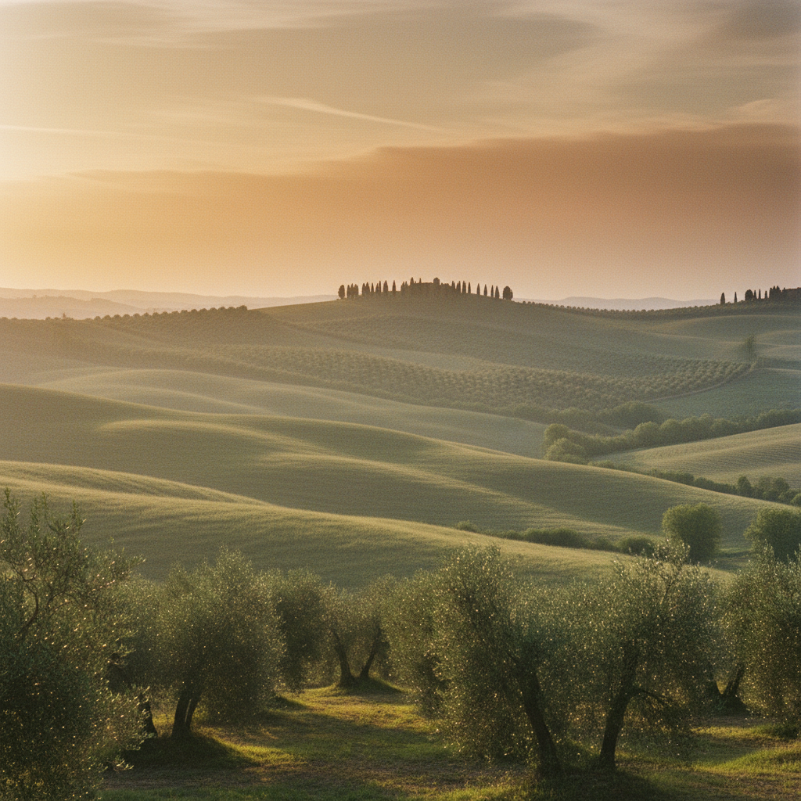

Eine alkoholfreie Emulsion, formuliert für die Männerhaut nach der Rasur. Mit Olivenöl und Mariendistel-Extrakt — der hauseigenen Uviox®-Oleox®-Synergie — wirken Antioxidantien dem natürlichen Hautalterungsprozess entgegen. Malve und Brennnessel beruhigen, was der Klinge gereizt hat.
Die Wirkstoffmatrix der UOMO-Creme stützt sich auf vier botanische Auszüge, die in der INCI-Liste namentlich ausgewiesen sind — keine Marketing-Bezeichnungen, sondern überprüfbare Inhaltsstoffe.
Liefert Squalan-ähnliche Lipide und Polyphenole. Bildet die Trägermatrix der Uviox®-Oleox®-Synergie gegen freie Radikale.
Quelle des Silymarin-Komplexes. In der Formulierung als antioxidativer Partner des Olivenöls geführt.
Klassischer Männerpflege-Extrakt. In der INCI-Liste der UOMO-Creme zur Beruhigung gereizter Haut nach der Klinge.
Mucilage-reicher Auszug — bildet auf der frisch rasierten Haut einen weichen, hautberuhigenden Film.
„Eine alkoholfreie Emulsion, deren Olivenöl-Mariendistel-Wirksystem dem natürlichen Hautalterungsprozess entgegenwirkt."
Die UOMO-Creme arbeitet mit zwei standardisierten Wirkkomplexen, die Biofficina Toscana in ihrer Produktbeschreibung namentlich nennt: Uviox® und Oleox®. Beide nutzen toskanisches Olivenöl als Träger und werden mit Mariendistel-Extrakt kombiniert.
Ergänzt wird das System durch Vitamin E (Tocopherol) und Vitamin C (Ascorbyl Palmitate) — beides in der INCI ausgewiesen, beides etablierte Radikalfänger in Hautpflegeformulierungen.
Olivenöl + Mariendistel · antioxidativer Schutzkomplex
Olivenöl + Mariendistel · Anti-Aging-Wirksystem
Die in der INCI deklarierten ätherischen Öle bilden ein Bouquet zwischen Zitrus, Holz und Gewürz. Keine synthetischen Parfums. Jedes Öl ist namentlich aufgeführt.
„Ein Duft, den man nicht aufträgt, sondern annimmt."
Wir reden gerne über das Ergebnis — und genauso gerne über jeden einzelnen Inhaltsstoff. So steht die Volldeklaration auf der Originalverpackung:
Italienischer Bio-Naturkosmetik-Standard. Kontrollierter Anbau, kontrollierte Formulierung.
Cruelty-free zertifiziert. Keine Tierversuche, weder am Endprodukt noch an Rohstoffen.
Keine tierischen Inhaltsstoffe in der Formulierung. Nachvollziehbar in der vollständigen INCI.
Auf Nickel-Spurenbelastung geprüft — relevant für sensibilisierte Haut nach der Rasur.

Biofficina Toscana sitzt in Lucca, knapp 30 km nördlich der Olivenhaine bei Pisa. Die Manufaktur bezieht — laut eigener Brand-Darstellung auf ecco-verde.de — den größten Teil ihrer Rohstoffe wie Öle und Honig aus regionaler, biologischer Landwirtschaft.
Kurze Transportwege, sparsame Verpackung, recycelte Materialien. Eine Linie, die nicht laut wird — die sich darauf verlässt, dass eine gut formulierte alkoholfreie After-Shave-Creme für sich selbst spricht.
Regionalität und kurze Transportwege sind für die Produzenten genauso wichtig wie der sparsame Umgang mit Verpackung.
Über 45 zu sein heißt nicht, weniger zu erwarten — sondern besser zu wissen, was zählt. Eine Creme mit klarer Deklaration, italienischer Herkunft und einer Wirkstoffmatrix, die nicht erklärt werden muss, sondern auf der Haut funktioniert.